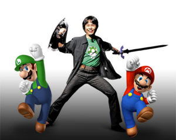
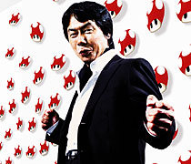
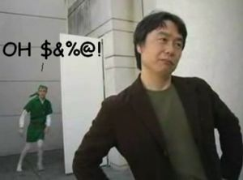

Shigeru Miyamoto
 De: La Frikipedia, la enciclopedia extremadamente seria.
De: La Frikipedia, la enciclopedia extremadamente seria.
De la serie grandes personajes:
Creador y destructor de todos tus buenos recuerdos de la infancia
| Nacimiento
|
Engendrado de un hongo magicco
|
| Muerte
|
No mientras sigas comprando toos sus videojuegos, posters, sistemas y ropa interior con su cara en corazonsitos
|
| Ocupación
|
Robarte todo el dinero con juegos de plomeros drogados y elfos que se creen peter pan
|
| Nacionalidad
|
mitad japones mitad mongol
|
| Malo o bueno
|
malo (IP anónima eres un maldito homosexual por haber pensado que esta bueno)
|
| Atentados contra la humanidad
|
todos
|
| Religión
|
Nintendista
|
| Notas
|
No importa que tanto quieras, no es posible dejar de jugar sus juegos
|
Shigeru Miyamoto es el nombre del vendedor de discos y películas piratas que tras años de buscar inspiración se convirtió en un ser amorfo creando ilusiones en las mentes de los jóvenes ilustres.
 Miyamoto en uno de sus sueños eróticos
Este hombre de forma no definida consume grandes cantidades de hongos alucinógenos (color verde pistacho con círculos blancos) y cada vez que come uno hace un sonido muy extraño con la boca (algo así: tirura ririri)
Sus obras
- Un día mientras su hermano lo ayudaba con la plomería de su hogar se le ocurrió crear a dos primos plomeros, los cuales eran, dos hongos con overoles y camisas de colores (roja y verde) uno llamado Lario y el otro Wuigi, los cuales debían salvar a un tierno dragón de las garras de una loca princesa llamada Beach, la cual reinaba con tiranía en un mundo de porro y chaquetas de cuero, y lo llamó Lario bros. Posteriormente fundó la religión de Nontiendo, para rendir culto a su amadao Lario.
 Tipica alucinación tras fumar un "hongo magico"
- "La legenda de cerda": esta cuenta la historia de una apasionada princesa (extemadamente gorda) la cual es separada de su amor Blink por su padre malvado Ganon-dork, el cual separa a la pareja en el acto sexual después de encontrar a Blink vestido con mallas blancas, zapatillas cafés, un vestido verde, un chaleco verde sin prenda abajo y un gorrito verde en forma de condón, todo esto era parte del fetiche y las fantasías de la princesa, ahora blink debe vencer a Ganon-dork y recuperar a su amor.
- Grupo musical rebelde: este torcido grupo de hombres homosexuales y transexuales a la vez conforman gran parte de la cultura musical de un país muy jodido llamado Mexicx y arruinan la radio con mierda pagana. Las principales obras de rebelde son:
- "Rejoto" (tema completamente irracional y totalmente homosexual)
- "Solo quédate en pendejo" (tema idiota y estúpido)
- "Fóllame" (tema triste y melancólico)
Cómo reconocerlo
 Muestra de afecto de parte de la gente hacia Miyamoto
- Usa lentes de contacto transparentes.
- Come y habla a la vez.
- Usa ropa de marca.
- Su alegría se desborda.
- Huele a mierda.
- Dice que sus órganos sexuales son una "touch screen".
- Sus canciones no riman y tienen letras estúpidas. Pero no tanto como las del reggaeton
- Es invisible ya que es amorfo.
- Es más friki que toda la frikipedia junta.
- Se dice que fue secuestrado
y violado cuando era niño, ya que solo crea historias sobre secuestros (Tomese como ejemplo Super mario bros y The Legend of Zelda)
Conclusión
Las obras de Shigeru Miyamoto son un ejemplo para todos nosotros de que no se debe mezclar porro y alcochol después de follarse un buzón del correo, así todos seremos mejores personas.
Autor(es):
- Krusher
- Nexo
- Fordus
- Kenedhor
- SITORELOADED
- Erbiejo
- Frikiman
- Roms
- Latiosu
- Corbí
Frikipedia 2005-2016, Licencia
GFDL 1.2 - Extraído por FrikiLeaks